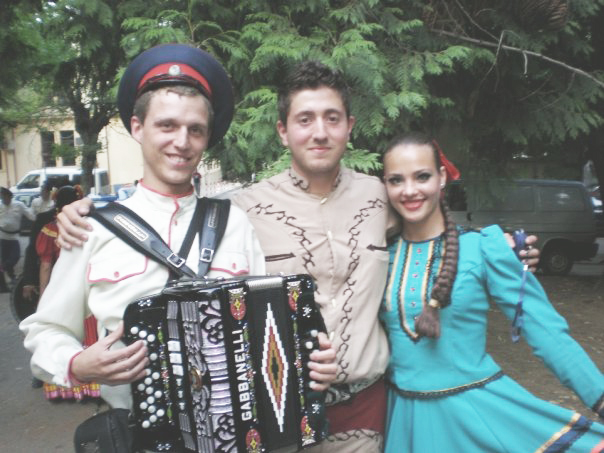
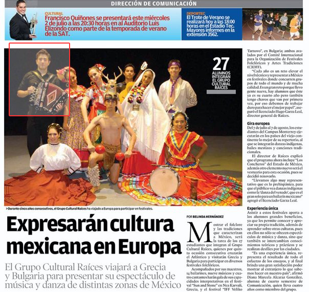

| About me | Resume | Music | Solar | Purdue | Art |
During my time as a student, I participated as a musician for Raices, a school art company that promotes Folk Music & Dances from Mexico. I had the opportunity to represent my country's traditions in folk festival in the US, Canada & Europe. Received the High Performance and the DEXFI award for my participation in cultural activities.
It gave me satisfaction to witness how a piece of live music can make people happy, specially people that live in rural isolated villages around the world.

